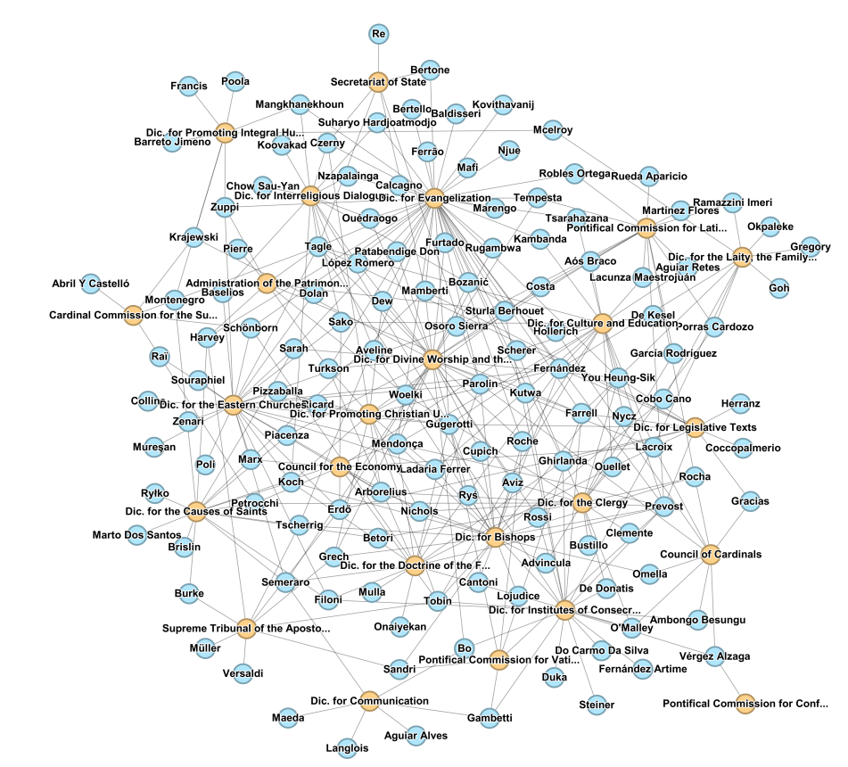
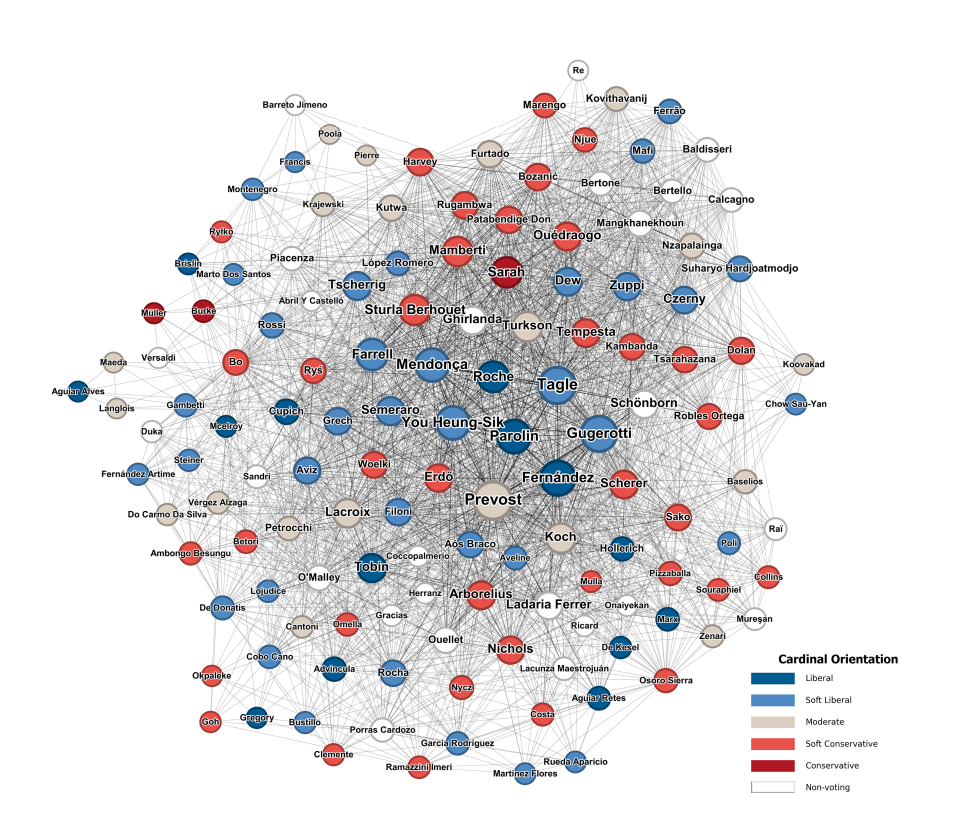
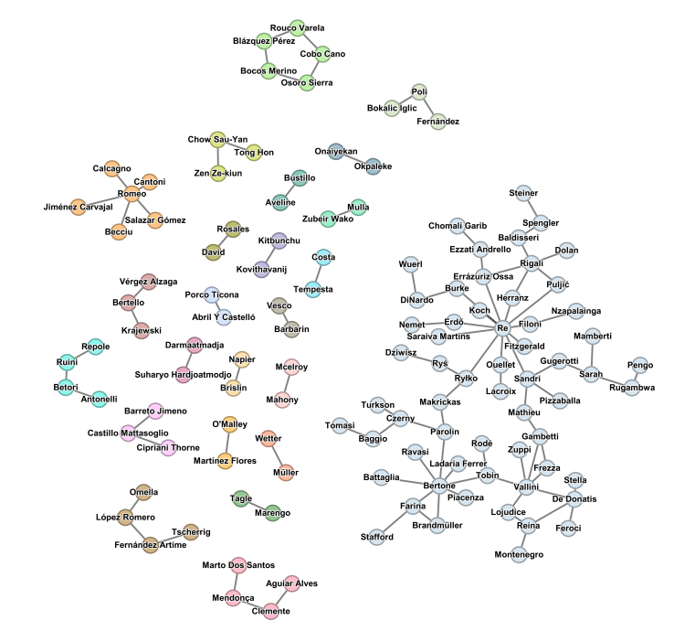
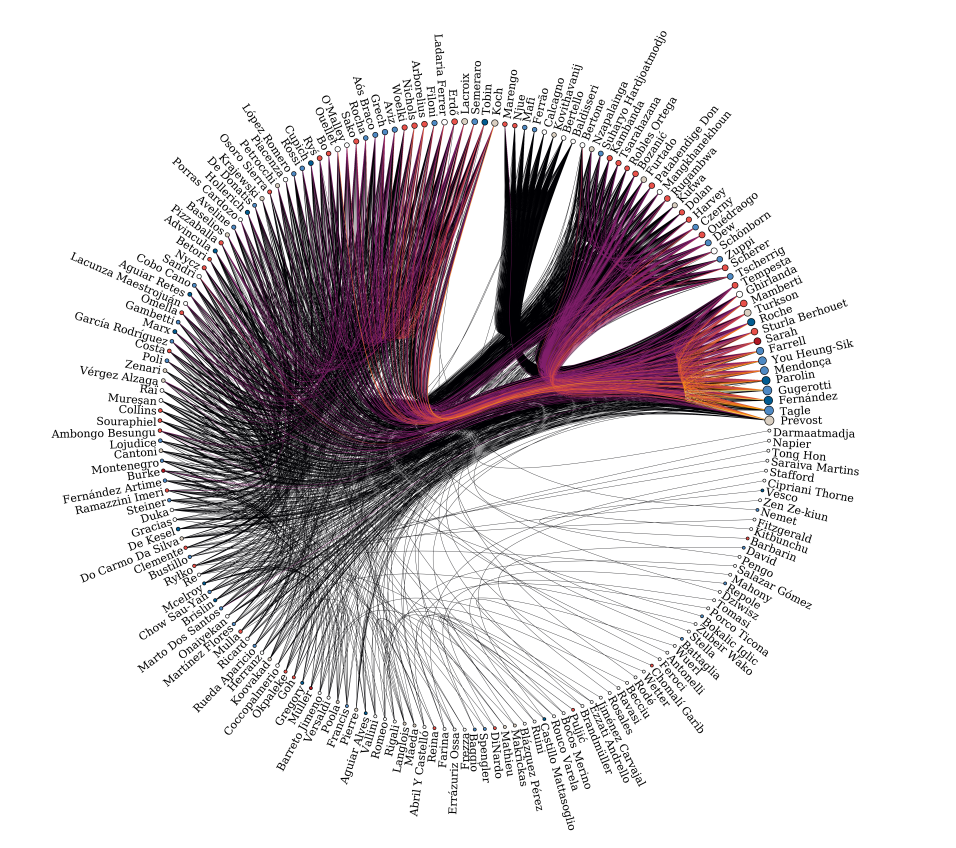
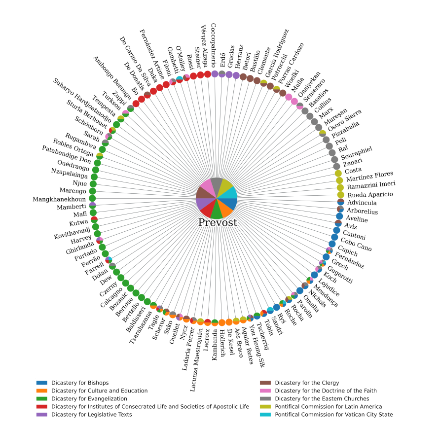
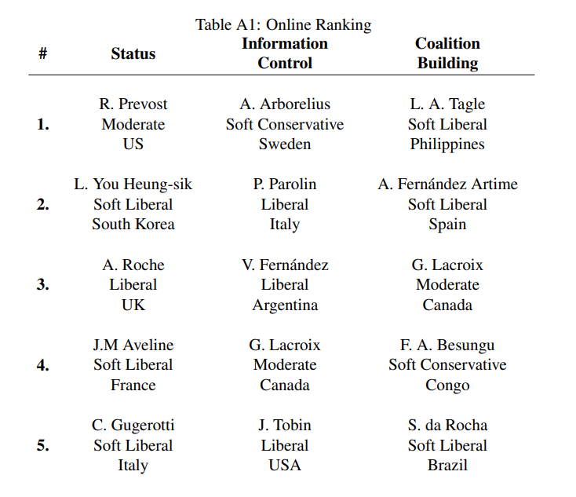
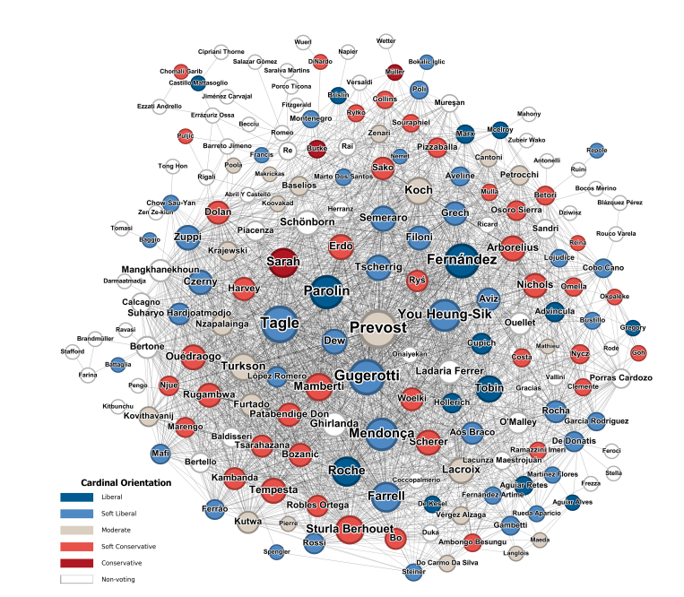

In May 2025, the College of Cardinals gathered in the Sistine Chapel to elect a successor to Pope Francis. But beyond the ancient walls of the Vatican, a parallel process was unfolding in the digital realm: artificial intelligence algorithms, prediction markets, and machine learning models were all attempting to forecast the outcome of one of the world's most secretive electoral processes.
The result surprised nearly everyone—both human and artificial. Cardinal Robert Prevost of Chicago was elected as Pope Leo XIV, becoming the first American-born pontiff in the Catholic Church's two-thousand-year history. Most AI models had predicted Italian Cardinal Pietro Parolin, the Vatican's Secretary of State, as the most likely winner.

The AI That Tried to Predict a Pope
A team of researchers—physicist Michele Re Fiorentin of the Polytechnic University of Turin, mathematician Alberto Antonioni of the University of Madrid, and computational social scientist Javier Valdano—developed a machine learning algorithm trained on five centuries of episcopal records and the public statements of all 133 cardinal-electors.
Their model analyzed the ideological positioning of each cardinal across multiple dimensions, mapping them into a complex network of theological and political affinities. The algorithm then simulated the conclave voting process among these virtual cardinals, running thousands of iterations to identify the most likely consensus candidate.


The visualizations above show the network structure of the College of Cardinals as mapped by the AI model. Each node represents a cardinal, with connections indicating ideological proximity based on their public statements on key church issues. The clustering reveals distinct factions—progressive, moderate, and conservative—whose alignments would ultimately determine the conclave's outcome.
Ideology, Factions, and the Network of Power
One of the most striking outputs of the AI analysis was the ideological mapping of the entire College of Cardinals. Using natural language processing trained on cardinals' public speeches, pastoral letters, and media interviews, the model classified each elector along a spectrum from liberal to conservative across issues such as liturgical reform, social doctrine, and interfaith dialogue.

The color-coded network above reveals the deep ideological divisions within the College: blue nodes represent liberal cardinals, red indicate conservatives, and intermediate shades capture the moderate and soft-leaning positions. The dense clustering around certain nodes—notably Parolin, Tagle, and Prevost—highlights the coalition-building dynamics that would prove decisive in the actual conclave.

Prediction Markets: When Money Meets the Sacred
While AI researchers analyzed cardinal networks, prediction markets created a parallel betting ecosystem around the conclave. Platforms like Polymarket processed over $25 million in cryptocurrency wagers, while traditional bookmakers like William Hill offered odds on papal candidates. Parolin led at 28% likelihood, with Tagle of the Philippines as a close second.
The decentralized nature of these crypto prediction markets represented a new frontier: for the first time, blockchain-based platforms were used at scale to bet on a religious election. The economic dynamics were striking—Bitcoin's value dipped 5% during the conclave's final days, and the sudden election of the relatively unknown Prevost caused dramatic swings in real-time odds, with Parolin's probability surging to 70% on Kalshi immediately after white smoke appeared, before the actual name was announced.

The table above, drawn from the researchers' analysis, ranks the top cardinal candidates across three strategic dimensions: Status (prominence and influence), Information Control (ability to shape narratives), and Coalition Building (skill at forging alliances). Prevost ranked first by status, validating one dimension of the AI model even though the overall prediction missed the final result.
Why AI Got It Wrong—and What It Reveals
The conclave's outcome offers a powerful lesson about the limits of algorithmic prediction in the face of genuine secrecy and human agency. Unlike political elections, where polling data, campaign finance records, and public endorsements provide rich signals, the papal conclave operates behind closed doors with no exit polls, no campaign trail, and no public deliberation.
"As AI advances rapidly toward even greater achievements, it is critically important to consider its anthropological and ethical implications." — Vatican document Antiqua et Nova, January 2025
The AI model's reliance on public statements may have missed the private conversations, personal relationships, and spiritual discernment that cardinals describe as central to their decision. The conclave's two-day duration—remarkably swift by historical standards—suggests a rapid convergence that the simulation's eight-to-nine rounds did not anticipate.
Pope Leo XIV: Making AI a Signature Issue
In a remarkable irony, the pope whose election AI failed to predict has made artificial intelligence one of the defining issues of his papacy. In his first address to the College of Cardinals, Pope Leo XIV identified AI as a critical challenge for human dignity and labor, pledging to build on the Vatican's existing engagement with technology ethics.


Pope Leo XIV was subsequently named among TIME magazine's 25 Most Influential Thinkers of 2025 for his emphasis on the moral dimensions of AI. He has urged Catholic technologists to develop AI systems that serve evangelization and human development, while warning against uses that create social inequalities or violate human dignity.
The Vatican's own guidelines on artificial intelligence—which took effect in January 2025, months before the conclave—prohibit uses that create social inequalities or violate human dignity. Under Pope Leo XIV, the Church is positioning itself as a moral voice in the global AI governance debate, advocating for regulatory frameworks that prioritize the common good over technological acceleration.
Implications for Economics and Decision Theory
From an economic perspective, the 2025 papal conclave represents a fascinating case study in information asymmetry, prediction market efficiency, and the boundaries of algorithmic decision-making. The $40 million ecosystem of papal bets demonstrated that prediction markets can emerge around virtually any uncertain event—but their accuracy depends fundamentally on the quality and availability of underlying information.
For decision theorists, the conclave illustrates the enduring gap between computational models and human deliberative processes. While AI can map ideological networks and simulate voting dynamics with impressive precision, it cannot replicate the spiritual discernment, personal relationships, and moral reasoning that ultimately shape consequential human decisions.
Sources: Science/AAAS (May 2025); CNN (May 2025); Euronews (May 2025); AInvest (April–May 2025); Forbes (May 2025); Catholic Review (December 2025); Vatican News; arXiv preprint by Re Fiorentin, Antonioni & Valdano.